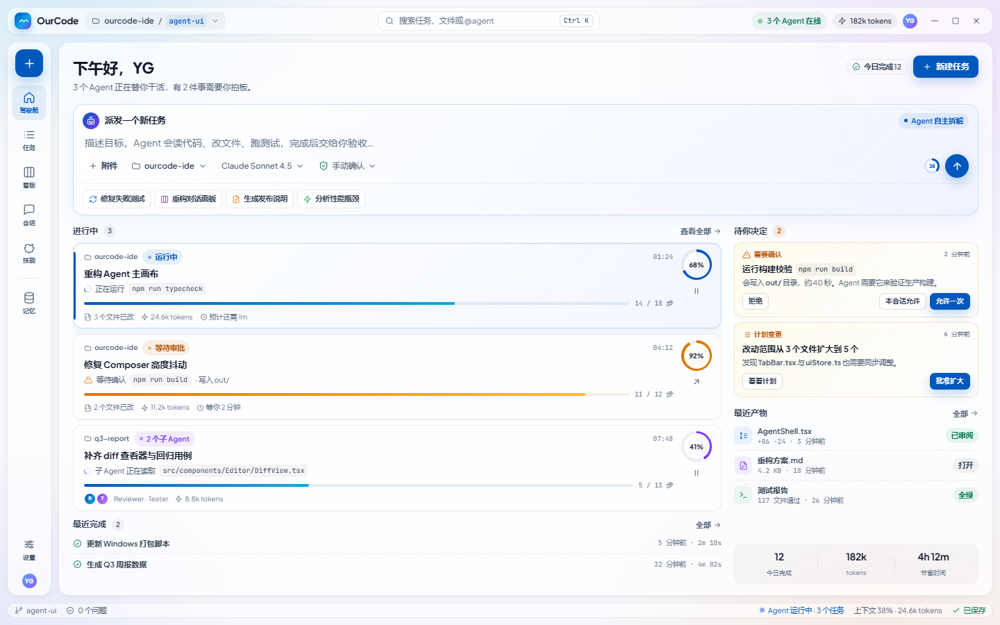

打开原型第一轮 v1–v4 为本地手写高保真原型（与现有 token 1:1，可当实现参考）；第二轮 A–G 为 Google Stitch 云端稿（含暗色与三个新信息架构）。全部沿用 Glass Light 画布、#0058BC 主色、Plus Jakarta Sans，不改 agent 运行时，只改壳与对话表层。
手写 HTML · 与现有代码 token 完全一致
Google Stitch 生成 · A–D 上午批次 / E–G 下午补方向批次
按「用户心智 / 关键能力 / 迁移成本」横向比较（v1–v4 与最接近的 A–G 互为印证）
| 版本 | 核心主张 | 多任务 | 代码审阅 | 迁移成本 | 最适合 | 同类印证 |
|---|---|---|---|---|---|---|
| V1 任务驾驶舱 | 先看全局，再进任务 | 强 | 弱（跳转会话） | 中高（新首页） | 日常入口 / 管理者 | D / G |
| V2 画布流 | 对话即工作台 | 弱（单会话） | 强（内联 diff） | 高（产物内联） | 长任务审阅 / 非工程用户 | C / E |
| V3 调度看板 | 多 Agent 并行编排 | 最强 | 中（详情抽屉） | 高（任务模型） | 一人公司 / 多 Agent 团队 | B / D |
| V4 协作分屏 | 对话与代码并排 | 中（当前任务） | 强（编辑器 + 审查条） | 低（保留 IDE 心智） | 现有 IDE 用户迁移 | A |
| E 检查点时间线 | 每个动作可回退 | 中 | 中（diff 在检查点内） | 高（checkpoint 模型） | 要「随时反悔」的安全感 | V2 / B |
| F 规格三段式 | 先对齐规格再动手 | 中 | 强（实现列） | 高（Spec 流程） | 重要任务 / 控制返工 | —（新增能力层） |
| G 暗色指挥舱 | 夜间挂机监控 | 强 | 弱（看板视角） | 中高（暗色主题） | 长时间挂机 / 深色偏好 | D 的暗色版 |
把 D/G 指挥台作为启动首页，默认进入 V4 / A 协作分屏干活，需要同时盯多个 Agent 时切到 V3 调度看板；V2 / C 画布流作为「专注审阅」模式；E 的检查点与 F 的规格流程可作为重要任务的可选能力叠加。所有版本共享同一套 token 与组件，不是几套产品。